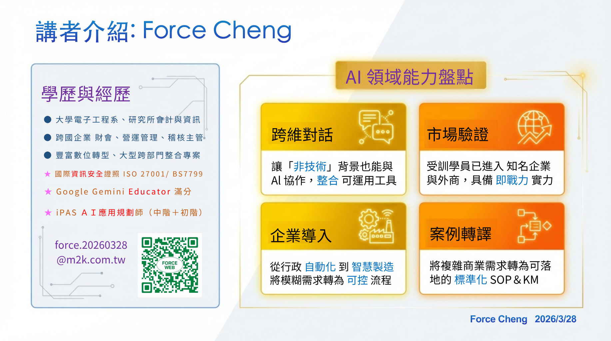

AI Workflow
把 AI 放進工作流，而不是停留在單點工具使用。
幫您把 AI 變成可用的系統。從導入理解、治理框架到實作流程，讓團隊可以真的拿來用。

🔗 LinkedIn：https://www.linkedin.com/in/force-cheng-taiwan/
📩 Email：force.20260328@m2k.com.tw
👉 線上版本：
https://force168.formosa-ai.com/
👉 PDF版本（可下載保存）
點我開啟 PDF
Force 是 FALO 的 Partner
FALO = Formosa AI Life Outlook
是來自台灣一群對 AI 充滿熱情的實踐者所組成的交流平台
我們專注於：
幫助我們了解您目前的 AI 使用狀況
並提供更適合您的工具與案例
填寫後您將獲得：
📌 請務必保存優惠碼
👉 未來寄信給我們時貼上即可兌換
這裡整理本次分享的核心資源，
包含簡報、問卷與後續延伸內容👇
把 AI 放進工作流，而不是停留在單點工具使用。
把治理、風險、角色與邊界整理成可落地的管理框架。
把工具整理成模型菜與現場可操作的入口，降低導入門檻。